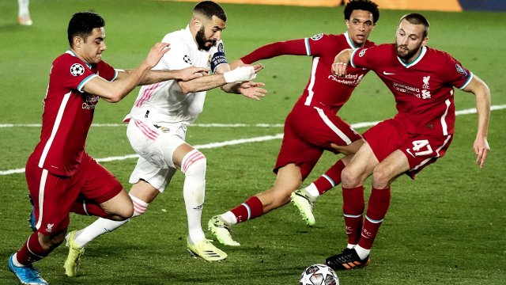
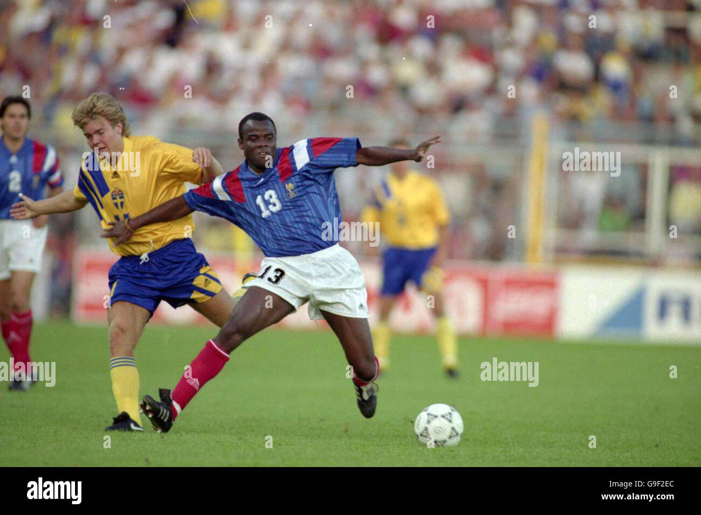
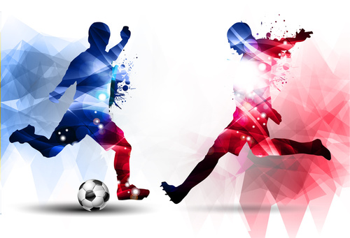

Sport opposant deux équipes de onze joueurs dont chacune s'efforce d'envoyer un ballon de forme sphérique à l'intérieur du but adverse en le frappant et le dirigeant principalement du pied, éventuellement de la tête ou du corps, mais sans aucune intervention des mains que les gardiens de but seuls peuvent utiliser.
Le football trouve ses racines réelles dans la soule (ou choule) médiévale. Ce jeu sportif est pratiqué dans les écoles et universités mais aussi par le peuple des deux côtés de la Manche. La première mention écrite de la soule en France remonte à 1147 et son équivalent anglais date de 1174.
Les Chinois étaient sans doute les premiers à taper dans un ballon en équipe au 3e siècle avant Jésus-Christ, et les contours du jeu connu sous le nom de football ont été définis en Angleterre au 19e siècle. Mais l'ancêtre de la plupart des jeux de ballons que nous connaissons était pratiqué dans les Amériques.
le footballest un sport d'équipe. Comme tout sport d'équipe, le football permet de développer l'esprit d'équipe et le respect des autres. Les jeunes apprennent à célébrer leurs victoires et à rester unis après une défaite. Sur le plan physique, cela améliore l'endurance car cela implique beaucoup de course
les bien faits du football pour la sante sont:

Bref, le football serait un facilitateur de la formation et de la pérennisation de cette « nation élective » que serait la France. C'est du moins ce que ...ss